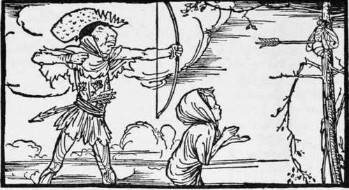

The Bear And The Skrattel
Description
This section is from the book "Household Tales by Brothers Grimm", by Brothers Grimm. Also available from Amazon: Household Tales by Brothers Grimm.
The Bear And The Skrattel
One Christmas Day, the King of Norway sat in the great hall of his palace, holding a feast. " Here's a health," said he, " to our brother the King of Denmark ! What present shall we send our royal brother, as a pledge of our good-will, this Christmas time?" "Send him, please your majesty," said the Norseman Gunter, who was the king's chief huntsman, " one of our fine white bears, that his liegemen may show their little ones what sort of kittens we play with." "Well said, Gunter ! " cried the king; "but how shall we find a bear that will travel so long a journey willingly, and will know how to behave himself to our worthy brother when he reaches him ?" "Please your majesty," said Gunter, "I have a glorious fellow, as white as snow, that I caught when he was a cub; he will follow me wherever I go, play with my children, stand on his hind legs, and behave himself as well as any gentleman ought to do. He is at your service, and I will myself take him wherever you choose."
So the king was well pleased, and ordered Gunter to set off at once with master Bruin: "Start with the morning's dawn," said he, "and make the best of your way."
The Norseman went home to his house in the forest; and early next morning he waked master Bruin, put the king's collar round his neck, and away they went over rocks and valleys, lakes and seas, the nearest road to the court of the King of Denmark. When they arrived there, the king was away on a journey, and Gunter and his fellow-traveller set out to follow. It was bright weather, the sun shone, and the birds sang, as they journeyed merrily on, day after day, over hill and over dale, till they came within a day's journey of where the king was.
All that afternoon they travelled through a gloomy dark forest; but towards evening the wind began to whistle through the trees, and the clouds began to gather and threaten a stormy night. The road, too, was very rough, and it was not easy to tell which was most tired, Bruin or his master. What made the matter worse was, that they had found no inn that day by the roadside, and their provisions had fallen short, so that they had no very pleasant prospect before them for the night. "A pretty affair this! " said Gunter, " I am likely to be charmingly off here in the woods, with an empty stomach, a damp bed, and a bear for my bedfellow."
While the Norseman was turning this over in his mind, the wind blew harder and harder, and the clouds grew darker and darker : the bear shook his ears, and his master looked at his wits' end, when to his great joy a woodman came whistling along out of the woods, by the side of his horse dragging a load of fagots. As soon as he came up, Gunter stopped him, and begged hard for a night's lodging for himself and his countryman.
The woodman seemed hearty and good-natured enough, and was quite ready to find shelter for the huntsman ; but as to the bear, he had never seen such a beast before in his life, and would have nothing to do with him on any terms. The huntsman begged hard for his friend, and told how he was bringing him as a present to the King of Denmark; and how he was the most good-natured, best-behaved animal in the world, though he must allow that he was by no means one of the handsomest.
The woodman, however, was not to be moved. His wife, he was sure, would not like such a guest, and who could say what he might take into his head to do ? Besides, he should lose his dog and his cat, his ducks and his geese; for they would all run away for fright, whether the bear was disposed to be friends with them or not.
" Good-night, master huntsman ! " said he ; u if you and old shaggy-back there cannot part, I am afraid you must e'en stay where you are, though you will have a sad night of it, no doubt." Then he cracked his whip, whistled up his horse, and set off once more on his way homewards.
The huntsman grumbled, and Bruin grunted, as they followed slowly after; when to their great joy they saw the woodman, before he had gone many yards, pull up his horse once more and turn round. "Stay, stay!" said he; " I think I can tell you of a plan better than sleeping in a ditch. I know where you may find shelter, if you will run the risk of a little trouble from an unlucky imp, that has taken up its abode in my old house down the hill yonder. You must know, friend, that till last winter I lived in yon snug little house that you will see at the foot of the hill if you come this way. Everything went smoothly on with us till one unlucky night, when the storm blew as it seems likely to do to-night, some spiteful guest took it into his head to pay us a visit; and there have ever since been such noises, clattering, and scampering up stairs and down, from midnight till the cock crows in the morning, that at last we were fairly driven out of house and home. What he is like no one knows; for we never saw him or anything belonging to him, except a little crooked high-heeled shoe, that he left one night in the pantry. But though we have not seen him, we know he has a hand or a paw as heavy as lead ; for when it pleases him to lay it upon any one, down he goes as if the blacksmith's hammer had hit him. There is no end of his monkey tricks. If the linen is hung out to dry, he cuts the line. If he wants a cup of ale, he leaves the tap running. If the fowls are shut up, he lets them loose. He puts the pig into the garden, rides upon the cows, and turns the horses into the hay-yard ; and several times he nearly burnt the house down, by leaving a candle alight among the fagots. And then he is sometimes so nimble and active, that when he is once in motion, nothing stands still around him. Dishes and plates—pots and pans—dance about, clattering, making the most horrible music, and breaking each other to pieces: and sometimes, when the whim takes him, the chairs and tables seem as if they were alive, and dancing a hornpipe, or playing battledore and shuttlecock together. Even the stones and beams of the house seem rattling against one another; and it is of no use putting things in order, for the first freak the imp took would turn everything upside down again.
Continue to:
Tags
fairy tales, children's stories, brothers grimm, household tales